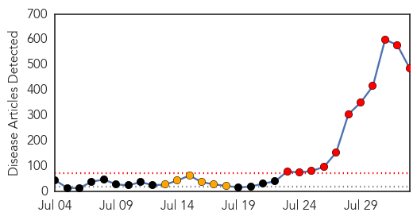
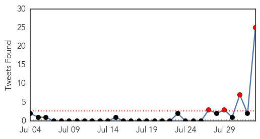

Ebola
30-Day Web Trend
11 alerts, 6 warnings

30-Day Twitter Trend
6 alerts, 0 warnings

Article Locations
Article Confidences
Top Articles:
- 1.000
- Ebola-hit west Africa launches $100 mn battle plan
- 1.000
- WHO Warns of ‘Catastrophic’ Consequences of Ebola
- 1.000
- African states declare emergency over Ebola virus
- 1.000
- Ebola Outbreak Could Have 'Catastrophic' Consequences
- 1.000
- Expert Eases Concerns Over Ebola Patients In U.S.
- 1.000
- American doctor infected with Ebola returns to U.S.
- 1.000
- American Ebola Victim Returns to US
- 1.000
- U.S. Officials Downplay Fear of Ebola Outbreak
- 1.000
- Exposure of health workers weakens Africa’s Ebola fight
- 1.000
- What you need to know about the Ebola outbreak
- 1.000
- Aid workers infected with Ebola evacuated to the US
- 1.000
- Airline moves to stop spread of Ebola - oddstuff
- 1.000
- Is Dr. Dodi Abdallah Really A Doctor? -
- 1.000
- Largest Ever Ebola Outbreak Is Not a Global Threat
- 1.000
- Comment: Ebola outbreak is cause for concern but there's hope yet
- 1.000
- Ebola, a ruthless killer
- 1.000
- American aid worker Kent Brantly infected with Ebola virus arrives in United States for treatment
- 1.000
- American aid worker Kent Brantly infected with Ebola virus arrives in United States for treatment
- 1.000
- Scale up efforts to tackle Ebola crisis: IFRC
- 1.000
- Two Americans are stricken by Ebola virus. Can you be infected? (Not likely.)
- 1.000
- Ebola-stricken American doctor in Atlanta for treatment
- 1.000
- Ebola-stricken American doctor in Atlanta for treatment
- 1.000
- They'd find a cure if Ebola came to London
- 1.000
- Ebola outbreak: Western drugs firms have not tried to find vaccine 'because virus only affects Africans', says UK's top public health doctor
- 1.000
- How the recent Ebola epidemic turned into the worst yet
- 1.000
- American Ebola Victim Returns to US
- 1.000
- UK's only ebola isolation unit has just two beds in it
- 1.000
- What is Ebola and how does it spread?
- 1.000
- The most from the coast
- 1.000
- Ebola outbreak: What you need to know
- 1.000
- U.S. Moves to Calm Rising Tide of Panic over Ebola Reaching American Shores
- 1.000
- Ebola fears grow across globe
- 1.000
- Infected U.S. doctor arrives in Atlanta
- 1.000
- No Ebola in South Africa, says NCID
- 1.000
- What you need to know about the Ebola virus
- 1.000
- 5 things to know about Ebola outbreak in Africa
- 1.000
- UN Unveils $100 million Ebola Response Plan
- 1.000
- Bats, superstition play a role as virus spreads in West Africa
- 1.000
- Russian virologists join battle with ‘deadliest outbreak of Ebola ever’ — RT News
- 1.000
- Ebola moves faster than control
- 1.000
- Spotlight: W. Africa seals off Ebola outbreak epicenter, launches 100-mln-USD emergency plan - Xinhua
- 1.000
- IFRC urges to scale up efforts to tackle Ebola outbreak - Xinhua
- 1.000
- World Turns Its Attention to West African Ebola Crisis
- 1.000
- What we need to contain the Ebola scourge
- 1.000
- 5 things to know about the Ebola outbreak amid fears of global spread - National
- 1.000
- 2 Americans infected with Ebola in Liberia coming to Atlanta hospital
- 1.000
- Ebola infected Americans head home
- 1.000
- WHO Calls for Increased Action on Ebola
- 1.000
- How deadly Ebola can spread
- 1.000
- Five Simple Questions About Ebola Answered
Showing top 50 articles...
Top Tweets:
- 0.962
- RT: dead reckoning MT: Ebola=scary. But... Flu kills 250K+each year. 2012 malaria killed 627K. Ebola's killed le…
- 0.959
- RT: Correio Braziliense: Ministério confirma caso de malária em Goiás, após suspeita inicial de ebola
- 0.953
- RT: Ebola symptoms are non-specific and similar to the symptoms of flu, malaria, cholera and typhoid Ebola101
- 0.886
- RT: Ebola's scary. But, some context: Flu kills 250K+ every year. In 2012, malaria killed 627K. To date, Ebola's killed less tha…
- 0.869
- RT: Malaria abi d real thing? “@NigeriaNewsdesk: EBOLA VIRUS: Lagos gov't confirms 2 contact with dead victim had fever http:…
- 0.825
- RT: EBOLA virus just made HIV sound like malaria
- 0.825
- RT: EBOLA virus just made HIV sound like malaria
- 0.761
- RT: @xellamachado era malária, já foi descartado ebola
- 0.755
- RT: @ginnymooy Op de subpagina van over Ebola staat een link, maar die verwijst naar malaria. :-S
- 0.706
- RT: More die annually from diarrheal disease than HIV. More die weekly from malaria than have ever died from Ebola.
- 0.674
- RT: CDC has protocols to ensure safe transport & care of patients w/ infectious diseases, incl Ebola, back to US. http://t.co/iRFe…
- 0.674
- RT: CDC has protocols to ensure safe transport & care of patients w/ infectious diseases, incl Ebola, back to US. http://t.co/iRFe…
- 0.653
- RT: This life ehh !! Ebola Virus just made HIV AIDS sound like Malaria.
- 0.653
- RT: "@Its_Hoe_K: Ebola Or HIV ? AfroBeatPartyToday cenzen_Owumba Eledumare__Dantonio" malaria
- 0.639
- RT: Interesting cultural observation on: people terrified of Ebola but don't sleep under mosquito nets. Malaria kills 1…
- 0.620
- RT: Although I'm mighty glad this is food poisoning and not ebola or malaria...amen
- 0.607
- RT: Mundo, I think like many, Ebola is like Malaria, Aids, The Old Plague...caused by Man'Evil. Nature does not create Virus.
- 0.603
- RT: With the arrival of "EBOLA" in west Africa....H.I.V now sounds like malaria...Godsaveus_sir
- 0.594
- RT: @drsanjaygupta Thank you Dr. Gupta for helping Ebola patients/doctors get needed care while keeping the hysteria titer …
- 0.592
- RT: Haha! RT: EBOLA virus just made HIV sound like malaria
- 0.582
- RT: Seriously: Haha! RT: EBOLA virus just made HIV sound like malaria"
- 0.577
- RT: Perspective: Ebola has killed a little over 700 people in this 3 month outbreak. Malaria kills 3000 children every day.
- 0.563
- RT: CDC & @StateDept are providing technical assistance for safe transport of ill patients w/ Ebola, minimize risk of spread of in…
- 0.542
- RT: She is saying her mind nah"@pradalily: U mean symptoms of EBOLA "@Bryant_DIM: That's malaria coming"@joowan_: I have this…
- 0.534
- RT: I don't mean to downplay Ebola. It's a terrible disease. But orders of magnitude more people will die of Malaria in the same …
- 0.518
- RT: “@nobudlams: Seems like some of these Ebola symptoms are very similar to malaria symptoms”u r right
- 0.517
- RT: Truth is malaria is killing more ppl in Africa than this Ebola. The western media is hyping it coz it's contagious. It's …
Unknown
30-Day Web Trend
6 alerts, 3 warnings

30-Day Twitter Trend
1 alerts, 0 warnings

Article Locations

Article Confidences

Top Articles:
- 0.943
- The Assam Tribune Online
- 0.937
- Japanese Encephalitis vaccination not effective during transmission: Experts
- 0.936
- Florida Beachgoers Warned Of Deadly Disease By CDC
- 0.917
- Chicago Tribune
- 0.917
- Chicago Tribune
- 0.917
- Chicago Tribune
- 0.917
- Chicago Tribune
- 0.917
- Chicago Tribune
- 0.917
- Chicago Tribune
- 0.917
- Chicago Tribune
- 0.882
- CDC Cautions Visitors to Florida’s Beach about Vibrio vulnificus
- 0.866
- Eleven gunmen killed in Lebanon fighting -official
- 0.866
- Some Israeli ground forces withdraw from Gaza
- 0.866
- Syrian Islamist gunmen seize Lebanese border town police station
- 0.866
- refugees from northern Gaza town can return
- 0.866
- Israel holds off on attending Gaza truce talks in Cairo
- 0.829
- New infection from deer ticks shows up in US
- 0.769
- 97 gastroenteritis patients hospitalized in Multan
- 0.757
- Arunachal Pradesh taking necessary steps to control JE spread
- 0.715
- Emergency funding to address canola virus
- 0.643
- Crib deaths back in Bengal
- 0.638
- Health Advisory Issued for Devils Lake on Oregon Coast
- 0.623
- UN warns of 'rapidly unfolding' health disaster in Gaza
- 0.623
- More than 220,000 displaced return home: UN
- 0.608
- Toxins in water leads to state of emergency in Ohio
- 0.600
- Dogs, horses show high rates of Lyme disease
- 0.590
- Toxins in water leads to state of emergency in Ohio
- 0.578
- Warning on Vibrio Bacteria Issued By Florida Officials
- 0.566
- Why seek treatment abroad, asks Msipa
- 0.556
- Toledo water supply alert to remain in effect overnight
- 0.553
- Toledo water improving but toxins still a concern for 2nd day
- 0.541
- Abandoned baby with Down syndrome may prompt bans on surrogacy
- 0.541
- Poland protests Russian import ban with 'apple selfies'
- 0.541
- Paris police officer detained over missing cocaine
- 0.541
- Israeli PM warns Hamas amid reports of partial withdrawal from Gaza
- 0.541
- France tops requests to erase online footprint, says Google
- 0.541
- French-Moroccan 'jihadist' detained at Charles de Gaulle
- 0.541
- Deadly attack on Lebanese soldiers prompts fears of Syria spillover
- 0.540
- Why seek treatment abroad, asks Msipa
- 0.531
- In South Sudan, response to looming threats of disease and malnutrition is a race against time and the elements - South Sudan
- 0.529
- Water ban for some in SE Michigan prohibits drinking, bathing due to Toledo, Ohio water emergency
- 0.515
- Dr. Goldhush Now Offers Solutions for Patients Suffering from TMJ
- 0.515
- Health advisory issued for Hayden Lake
Top Tweets:
- 0.730
- RT: Vuelve Gusana Simenez .. hablando de la malaria que hay en el país, despues de haberse tomado 7 meses de vacaciones Sobera…
- 0.714
- RT: Que ha pasado con el estado del sistema de salud venezolano? La Malaria esta de vuelta, y escasez de anti-retrovirales en 20%…
- 0.654
- RT: En el año 2009, Minho fue nombrado embajador de UNICEF, para proteger a niños africanos contra la malaria :) Aquí... h…
- 0.586
- RT: Malaria : un médicament balaie le parasite en douze heures: C’est la première fois en 20 ans qu’on découvre un... http://t.…
- 0.569
- RT: No se a Uds pero estoy harta de tanta malaria en est pais!!!No hay ninguna buena noticia?
- 0.506
- RT: @Su_Gimenez estuviste 7 meses de vacaciones, hablas de malaria, default? Mucha lampara en la cara, muy divine pero muy …